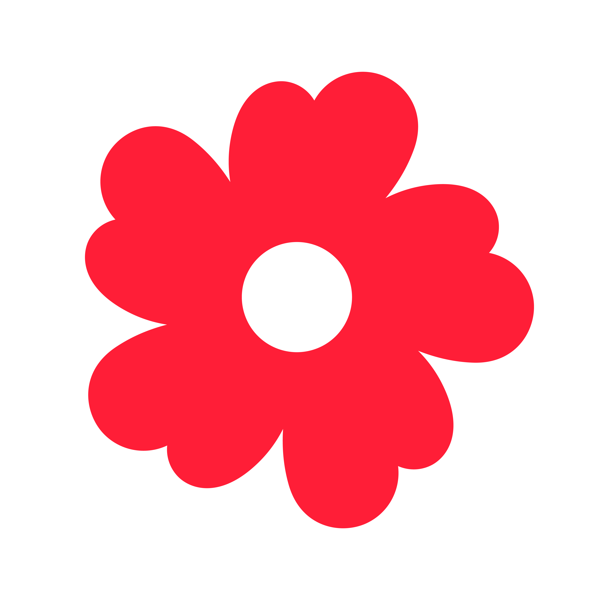

AI 进展评估指南 · 用真实的故事和透明的数据，让善意开花结果
项目进展是公益项目向捐赠人传递信任与温度最重要的窗口，也是驱动持续支持的基石。一篇用心、透明、有温度的进展，能让捐赠人真切感受到善款的落地与改变；反之，如果进展内容空洞或信息不实，则可能削弱信任，甚至影响机构的长期发展。
为了帮助大家更好地与捐赠人建立信任，我们推出了 "AI 进展辅助评分" 模型。我们希望通过对优质进展的识别与激励，鼓励每一位伙伴用真实的故事、清晰的账目，让捐赠人看见"善意如何开花结果"。
至少每 3 个月发布 1 次进展，按时发布进展，确保项目合规。
进展须为真实的执行内容，既有"温度的故事"，也要有"理性的数据"——善款支出、受益人数、物资数量等。
能反映近期的执行情况，体现执行效率。
为了鼓励项目围绕项目执行本身，为捐赠人提供真实、具体的执行反馈，项目公示、劝募通知、活动预告、节日祝福等类型将不计入 AI 评分。
剔除上述类型进展后，AI 评分围绕执行故事、善款使用类进展，从三个层面评估：
重点评估执行故事类，考察单篇进展的内容质量。
对项目近 6 个月的整体进展情况进行综合评估。
基于机构下的所有项目取均分，划分好中差三档。
如果机构评分为"C"的项目占比 ≥ 30%，机构最高只能评"B"。
重点考察执行故事（长图文/短图文），鼓励项目用真诚、详实的语言讲述真实故事——遇到的困难、解决的策略、执行步骤、受助人的动人瞬间。
| 评估维度 | A | B | C |
|---|---|---|---|
| 时效性 20% |
进展的执行内容为当月发生 | 进展的执行内容时间发生范围为近一个季度内 | 进展中执行内容时间发生范围超过一个季度 |
| 项目相关性 20% |
内容与项目目标、受助对象、帮扶方案高度相关 | 基本回应受助对象和帮扶方案 | 内容偏离项目方向 |
| 执行细节 20% |
充分描述执行细节：困难与应对、执行步骤、现场情况等 | 有简单的时间、地点、受助对象要素描述，但缺乏细节 | 只有笼统描述或"项目进展顺利"；无图片 |
| 成果展示 20% |
有明确量化数据，能说明成果带来的具体改变或影响 | 能提供一定的结果数据 | 无量化数据或仅感谢不汇报；数据前后矛盾 |
| 内容丰富度 20% |
图文并茂，多张图片/视频；文笔生动，能引发情感共鸣 | 能结合图文清晰呈现执行过程，语言朴实 | 寥寥数语无图片；文案过度夸张影响可信度；内容雷同 |
| 评估维度 | A | B | C |
|---|---|---|---|
| 进展构成 30% |
执行故事类+善款公示等执行相关进展占比 ≥ 80%；涵盖筹备、执行、反馈全流程 | 执行相关进展占比 50%~80%，构成略显单一 | 无效进展占比 > 50%（宣传/劝募/祝福为主）或几乎全是简短财务数字 |
| 内容质量 30% |
深入描述"如何做、困难、解决、受益人反馈/改变"；图文质量高 | 内容停留在表面记录，缺少过程细节和深层影响；图片较少 | 所有进展都是口号式描述，无实质内容；图片缺失或网络配图 |
| 更新频率 20% |
每月均有进展发布 | 每 3 个月能发布 1 次 | 做不到每 3 个月 1 次 |
| 善款透明度 20% |
每季度至少 1 次善款披露，含收支明细+凭证；善款使用与执行可对应 | 每半年至少 1 次善款披露，有基本收支但明细不足 | 超过半年无善款披露；仅有数字罗列无明细 |
每月稳定发布进展，内容兼具执行故事 + 量化数据 + 善款披露，图文并茂。
间隔 3 个月以上才发 1 次，内容仅有感谢/通知/劝捐，缺少执行细节和善款说明。
我们鼓励每一位伙伴用心写好进展，让捐赠人看到善意的力量。对于持续获得高分的机构，我们将提供以下激励：